Самый классный сюжет игр жанра стратегии начала 2000х
Один из ключевых персонажей серии игр Warcraft 3 - Артас Менетил
Подробнее эту историю можно прочитать в книге "Артас: Возвышение Короля-Лича" за авторством Кристи Голден.
Так же есть видео
"Возвышение Короля-Лича"
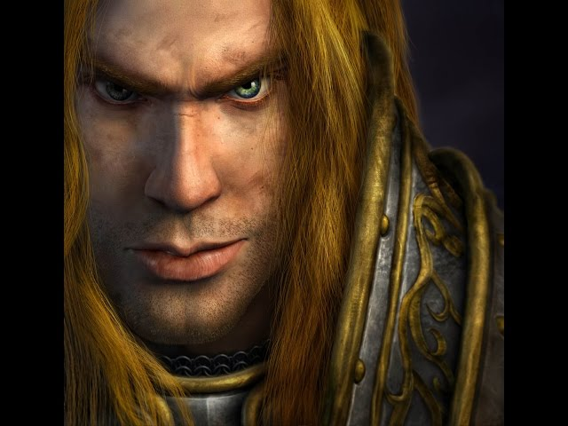
Рыцарь Серебряной Длани
Артас Менетил – кронпринц Лордерона и рыцарь Cеребряной Длани. Был сыном короля Теренаса Менетила II и наследником трона.
Утер Светоносный обучал его бравому делу паладина.
Но несмотря на многообещающее начало жизни, после объединения с Королем-личем,
Артас стал одним из самых ужасных созданий, когда-либо встречавшихся на просторах Азерота.
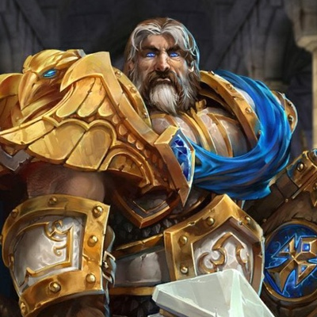
В русской версии Warcraft III Артас говорит голосом известного актера дубляжа Владимира Вихрова, а World of Warcraft и Heroes of the Storm - Артёма Кретова.
Боевому искусству Артаса обучал сам Мурадин Бронзобород, брат короля дворфов Магни Бронзоборода.
Артас преуспел в этом начинании и стал экспертом-мечником. Под покровительством Утера Светоносного
Артас вступил в орден рыцарей Серебряной Длани в возрасте 19 лет. Несмотря на свое безрассудство и упрямство, Артас стал прославленным воином.
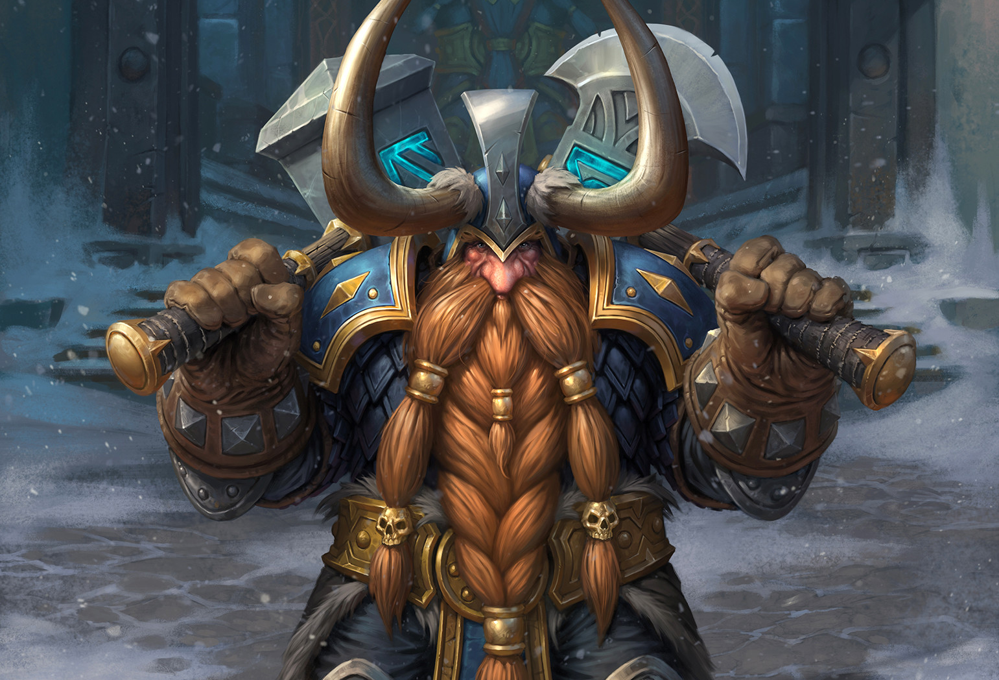
Чума
Трудности начали захлестывать Азерот. Орки вырвались из своих лагерей, а также быстро распространялись новости о чуме, атаковавшей северные земли.
Джайна и капитан Фалрик были посланы в качестве подкрепления Артасу, которому уже исполнилось 23 года,
вместе они должны были исследовать таинственную чуму. Сражаясь с армией мертвецов, они встретились
с некромантом Кел'Тузадом близ городка Брилл и преследовали его до Андорала. Душа его страдала от всего того горя, что
некромант принёс его народу и ещё мог принести. Гнев начал заполнять сердце юного паладина.
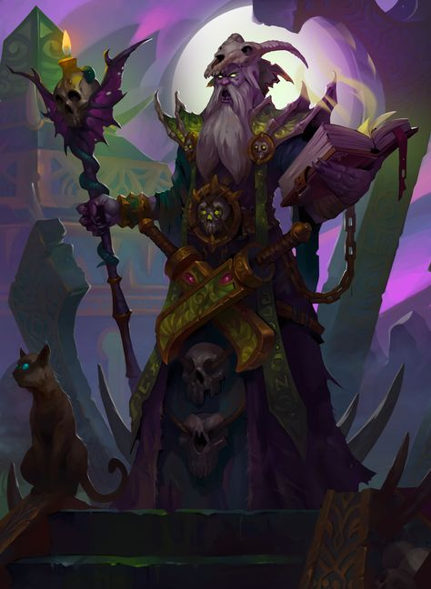
Кел'Тузад уже заразил все зерно, хранившееся в Андорале и отправил его в ближайшие деревни.
Перед смертью от руки Артаса, Кел'Тузад обмолвился о Мал'Ганисе, который вел за собой Плеть.
Джайна и Артас отправились на север, чтобы сразиться с ним в Стратхольме.
По пути Артас и Джайна в надежде отдохнуть остановились в Дольном Очаге. Вместо отдыха
их предупредили о надвигающейся армии Плети. Артас приказал Джайне найти Утера и попросить его о помощи,
а сам остался оборонять город. К своему ужасу Артас обнаружил, что чума не являлась средством массового убийства,
она превращала невинных горожан в живых мертвецов. Войско Артаса выдыхалось и было уже на грани поражения,
когда прибыл Утер с подкреплением и спас деревню.
Очищение Стратхольма
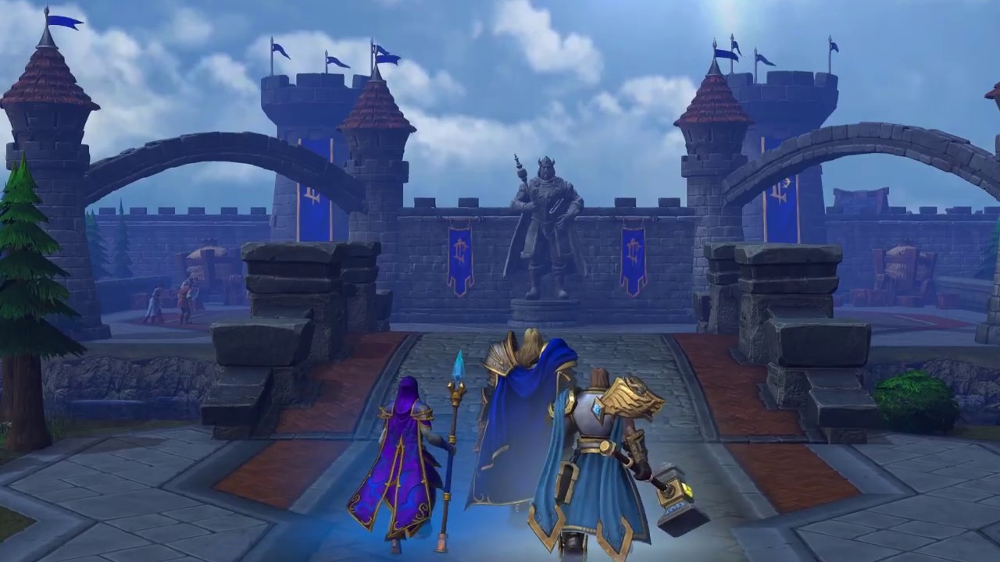
По прибытии в Стратхольм Артас обнаружил, что зерно уже распределено между жителями города и осознал, что вскоре все они
превратятся в живых мертвецов. Он приказал Утеру и его рыцарям уничтожить весь город. Находясь в ужасе от услышанного,
Утер не поддержал Артаса, сказав, что не выполнит приказ. Юный принц отправил Утера в Лордерон в качестве охраны Джайны.
Артас распустил рыцарей Серебряной Длани. Оставшиеся рыцари помогли Артасу в уничтожении зараженных горожан.
Джайна отправилась в Лордерон вместе с Утером. Так юный паладин остался один на один с своей пылающей яростью в сердце и
гневом, терзавшим его душу. Оставленный возлюбленной. Покинутый наставником. Лишённый мудрого совета.
И без права на ошибку. Это был шаг в пропасть.
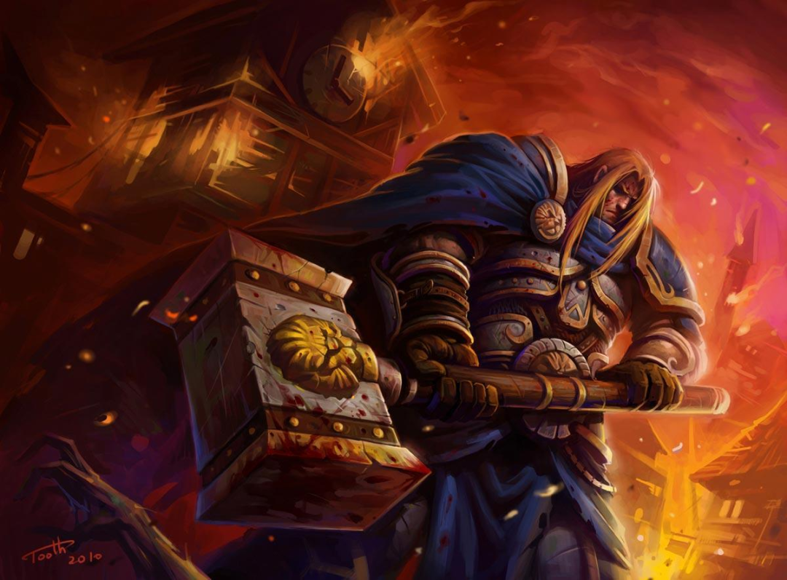
Как только молодой принц начал уничтожать жителей Стратхольма, перед ним предстал сам Мал'Ганис, пытавшийся забрать души горожан.
Артас пытался уничтожить души до того, как они попадут в лапы Мал'Ганиса. В конце концов Артас потребовал финальной битвы с повелителем ужаса.
Мал'Ганис улизнул, пообещав встретиться с Артасом в Нордсколе.
"Я отыщу тебя на краю земли! Ты слышишь меня? На краю земли!" - с гневом, бушующем в сердце принца,
прокричал Артас в след исчезнувшей фигуре повелителя ужаса. Месть стала целью паладина.
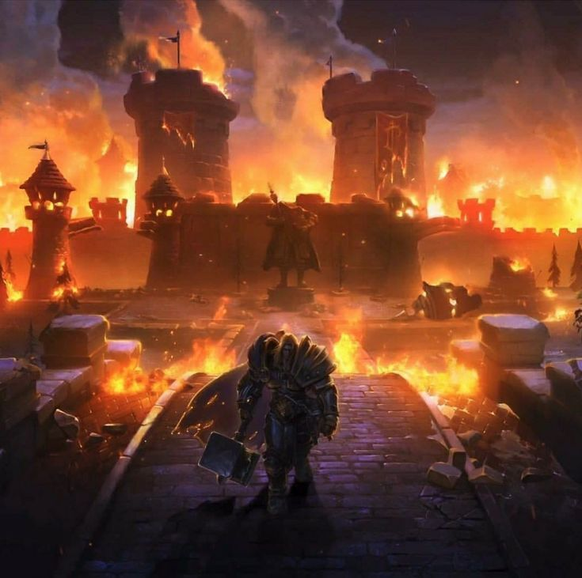
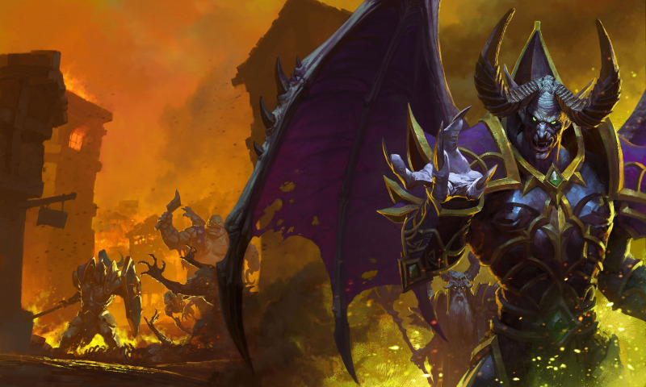
Нордскол
По прибытию в Нордскол Артас начал преследование. Блуждая по заснеженным чащам и леденым ущельям принц встретил
своего наставника, Мурадина Бронзоборода. Артас помог дворфу и его людям отбиться от наступающей нежити.
Мурадин был рад видеть своего ученика, но радость его была недолгой.
Узнав о безчинствах Мал'Ганиса в Восточных Королевствах, Мурадин рассказал Артасу о таинственном рунном клинке,
Ледяной Скорби, что может помочь сразить повелителя ужаса.
Ледяная Скорбь
В поисках Ледяной Скорби Артас и его войска продолжали
пробиваться к крепости Драк'Тарон. Как только принц добрался до крепости, перед ним появился сам Мал'Ганис и
предсказал его скорую смерть. Артас и Мурадин, оставив трех капитанов — Фалрика, Марвина и Люка Валонфорта защищать
крепость, отправились на поиски Ледяной Скорби.
Пройдя через древние ворота, Артас, Мурадин и небольшой отряд воинов оказались совсем недалеко от легендарного
рунного меча. Артас вскоре столкнулся с Стражем, который попытался не пустить молодого принца к легендарному мечу.
Страж пал, а Артас и Мурадин получили заслуженную награду — Ледяную Скорбь. Прочитав начертания, Мурадин сообщил,
что меч проклят и умолял Артаса:
"Ох, оставь все как есть, Артас! Забудь об этом и веди своих людей в родные земли!".
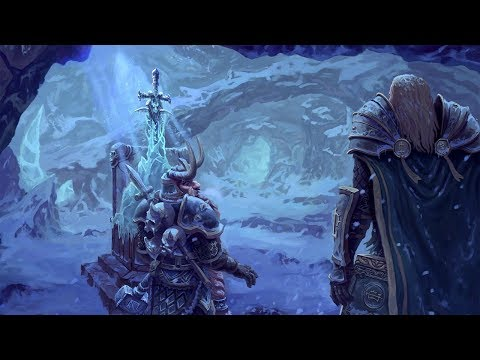
Артас был непреклонен, он призвал духов пещеры освободить меч из его ледяной тюрьмы, уверяя, что "отдаст всё или же
заплатит любую цену, если только духи позволят защитить его народ". Жажда мести поглотила юного принца.
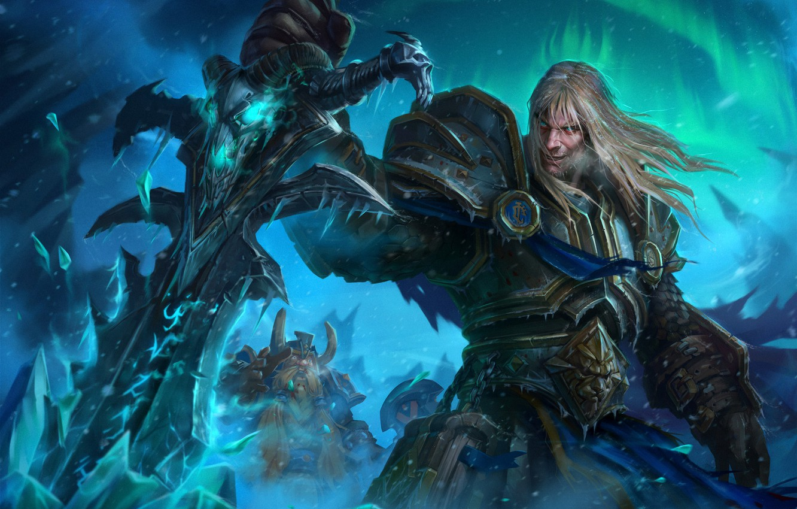
Когда меч освободился от ледяных оков, Мурадин
получил удар отскочившим ледяным осколком. Артас взял Ледяную Скорбь и вернулся в лагерь, оставив Мурадина умирать.
С мечом в руках Артас победил всех слуг Мал'Ганиса и наконец встретился с ним лицом к лицу.
Мал'Ганис сообщил, что голос, который начал слышать Артас, принадлежит Королю-личу. Не смотря на это, на удивление
демона, Артас ответил, что голос говорит "пробил час возмездия". Убив повелителя ужаса, Артас отправился на север,
оставив свои войска.
Предательство
Спустя несколько месяцев Артас вернулся в Лордерон, который ликовал при возвращении своего чемпиона, победителя нежити.
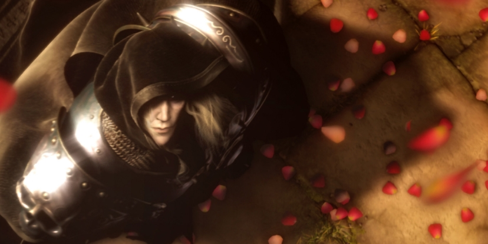
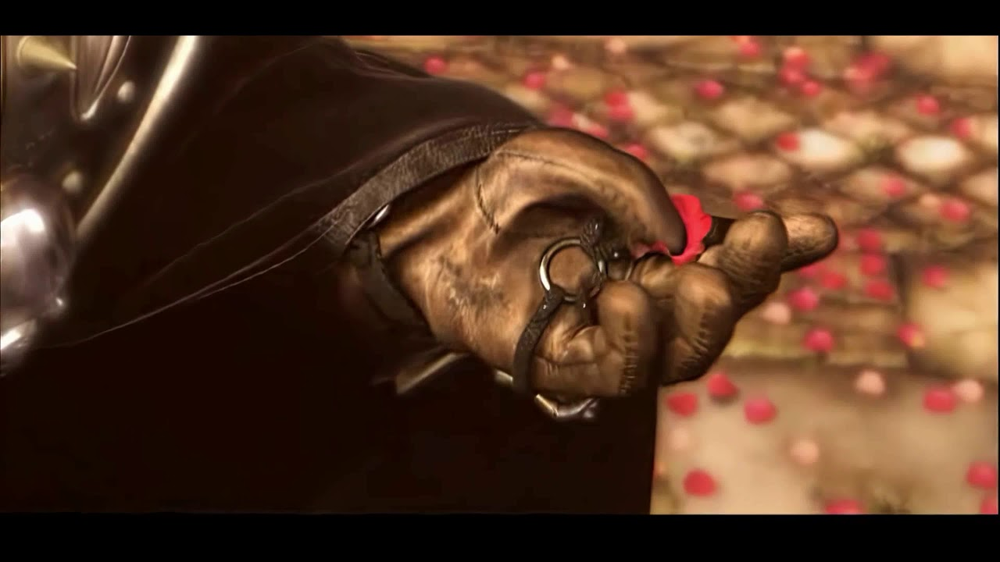
Артас пал на колено перед троном своего отца, короля Теренаса. Однако затем он поднялся, взял Ледяную Скорбь
и убил им своего ошеломлённого отца.
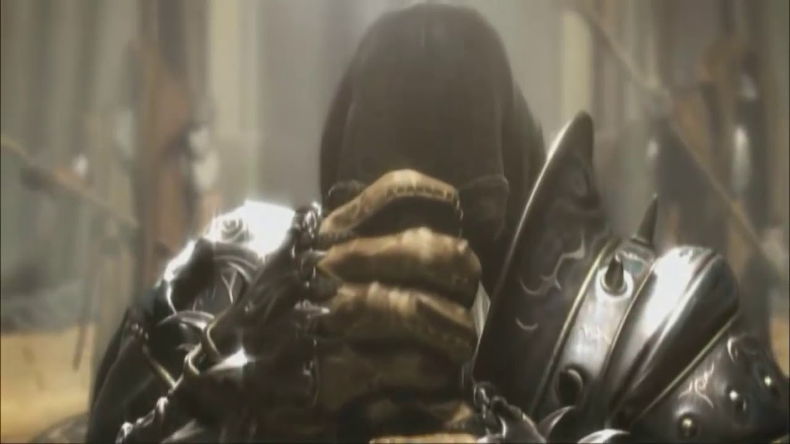
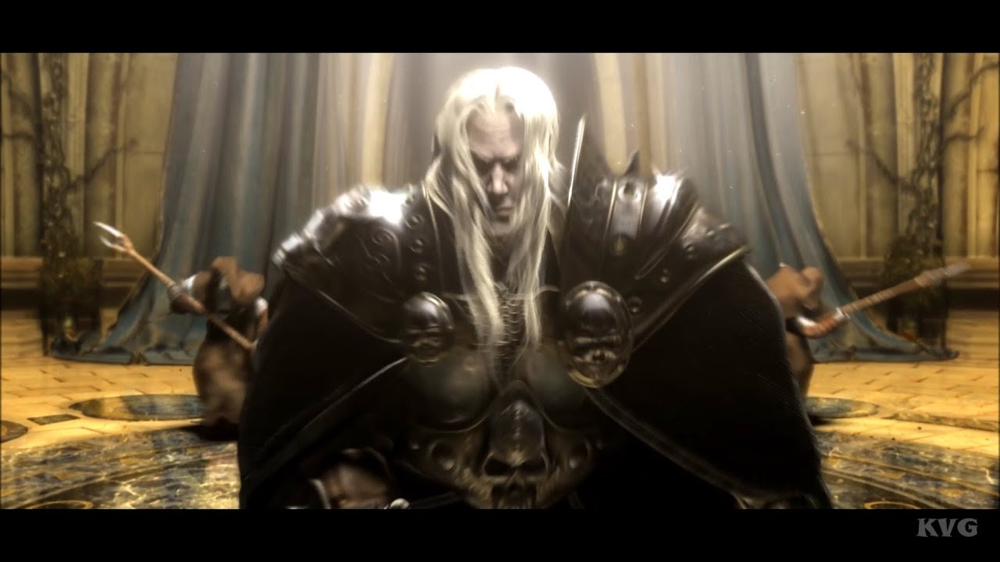
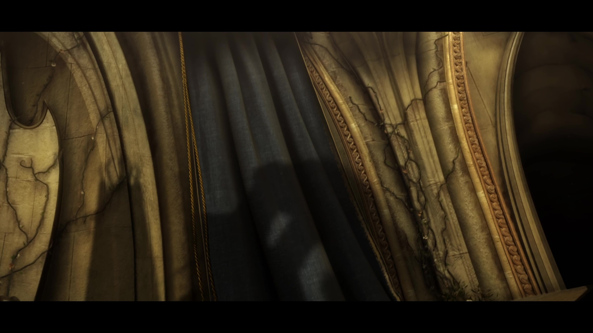
Артас исчез и от него недели не было никаких вестей. Ледяная Скорбь жаждала крови. Эта жажда поглотила и молодого принца.
Затем Артас, ведомый волей короля-лича, сам стал бесчинствовать в некогда родных землях. Вот лиш немногие зверства,
которые он совершил:
- Восстановил культ Проклятых
- Убил палладинов ордена Серебрянной Длани, в том числе и своего бывшего наставника Утера Светоносного
- Маршем прошёл про столице эльфов крови Луносвету, осквернил Солнечный Колодец, святыню эльфов, воскресив Кел'Тузада
- Убил Сильвану Ветрокрылую, предводительницу следопытов и превратил её в банши
- Убил магов кирин-тора в Даларане, украл книгу заклинаний Медива и призвал могущественного демона Архимонда
- Вернулся в Нордскол, так как король-лич ослаб и начал призывать Артаса на помощь
- Заручился поддержкой Ануб'арака и с помощью нерубианцев убил и воскресил в качестве ледяного змея синего дракона Сапфирона
- Перед самым ледяным троном одержал победу над Иллиданом, эльфом, что пришёл уничтожить короля-лича по приказу демонов
Триумф Короля-лича
После короткого, но упорного боя, Иллидан случайно ослабил оборону, и Артас тут же воспользовался этим: рассёк грудь
охотника на демонов Ледяной Скорбью, и тот пал на снег, а Артас направился к воротам Ледяной Короны.
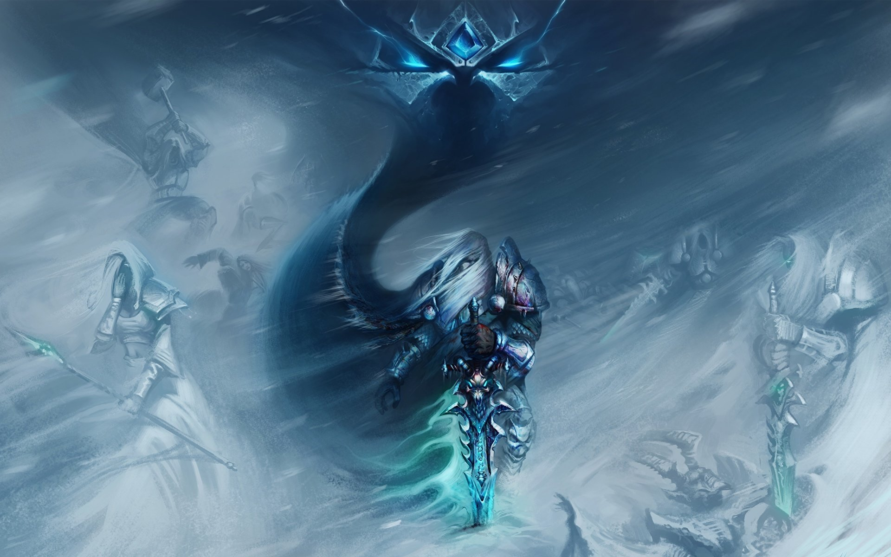
Артас ступил на земли ледника и увидел извилистую дорогу, прикованную ко льду. Пока он поднимался навстречу своей
судьбе, голоса преданных им людей заполняли его разум. Он услышал Мурадина Бронзоборода, Утера и Джайну, взывавших к нему.
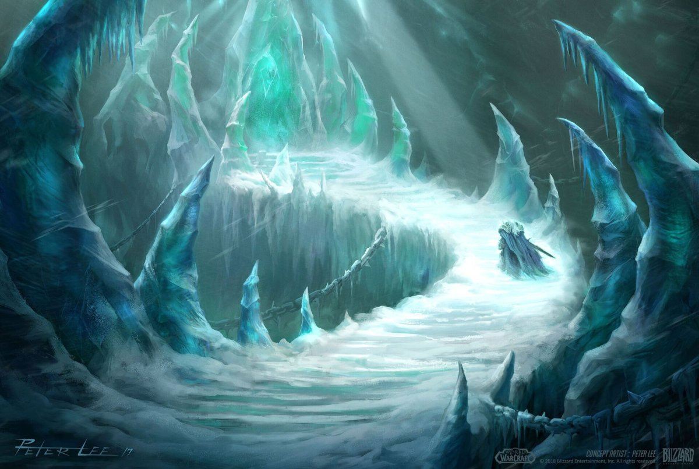
Но Артас игнорировал эти голоса, продолжая своё восхождение. В конце концов Артас достиг вершины и обнаружил перед
собой ледяную глыбу. В ней находился ледяной доспех, установленный в виде сидящей на массивном троне фигуры.
Теперь с ним говорил лишь один голос — скрежещущий шепот Нер'зула.
"Верни меч... замкни круг... верни мне свободу!"
С громким боевым криком Артас направил Ледяную Скорбь против ледяной тюрьмы Короля-лича и с оглушающим криком Ледяной Трон взорвался,
и осколки кристалла рассыпались по земле. Артас сделал несколько шагов вперед, подобрал шипастый шлем и надел этот невообразимо могущественный артефакт на свою голову.
"Теперь... мы... едины!"
В этот момент души Нер'зула и Артаса объединились, сформировав единое могущественное существо, как и планировал
всегда Король-лич. Артас как нечто отдельное перестал существовать, теперь он стал половиной одного из самых
могущественных созданий, которое когда-либо знал Азерот. Он стал частью нового Короля-лича.
Внешняя стена Ледяной Короны пала, и осталась лишь одна вершина. Король-лич бесшумно сел на расколовшийся трон,
осматривая свое новое королевство и выжидая...
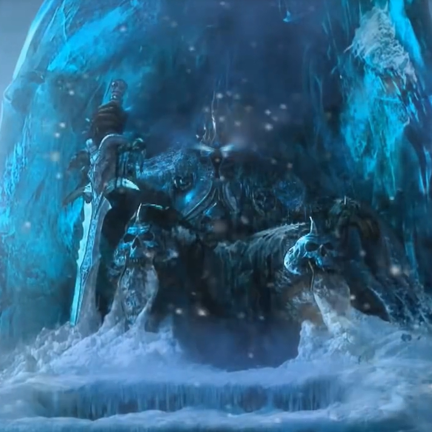
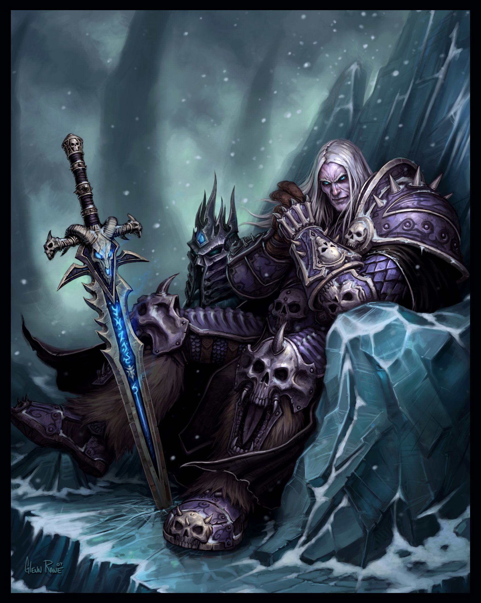
На этом история юного палладина Артаса Менетила закончилась и началась история Короля-Лича Артаса.